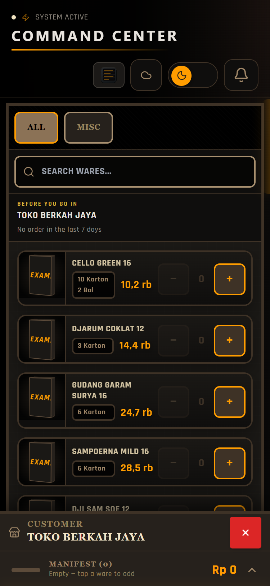
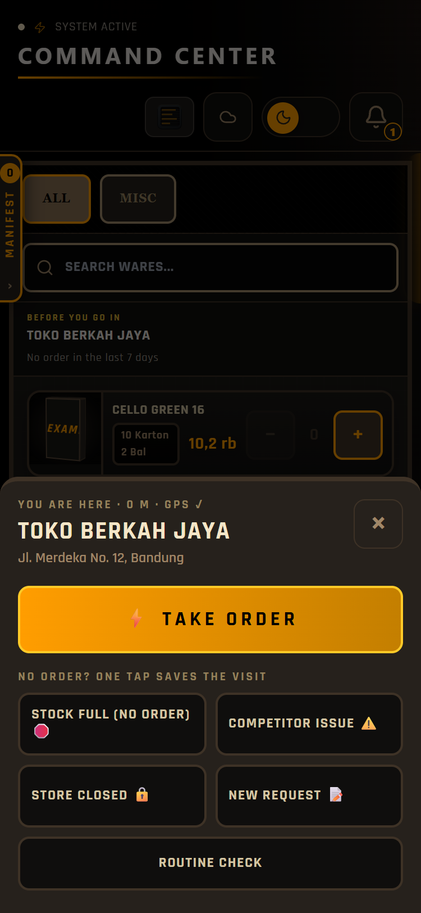
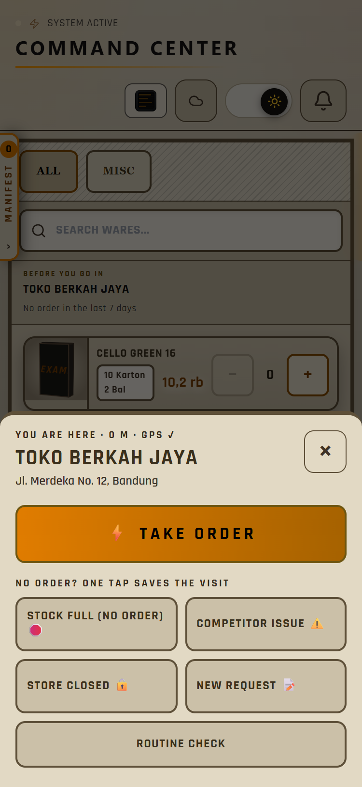
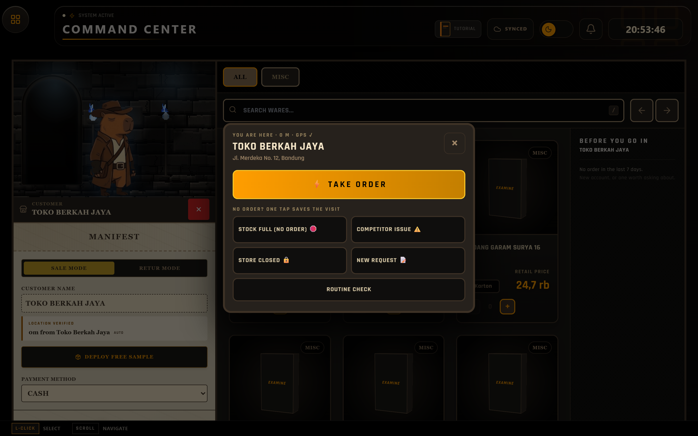
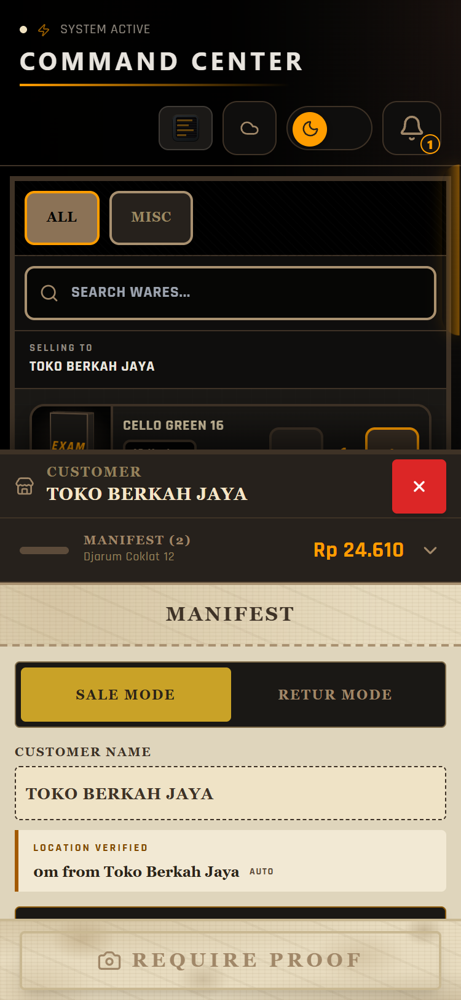
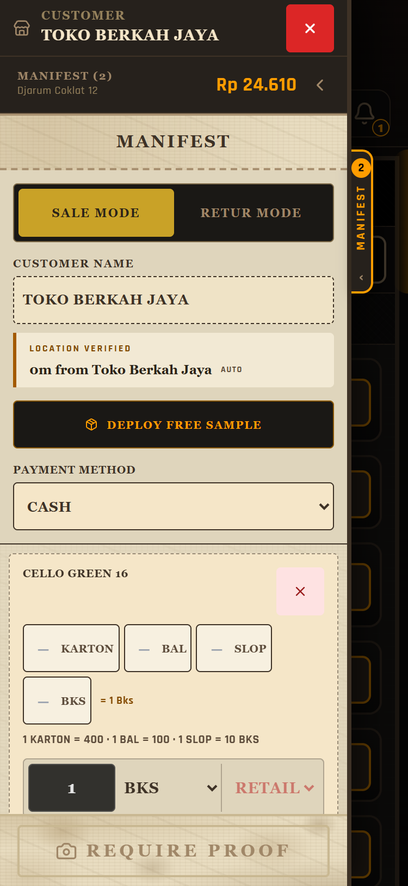
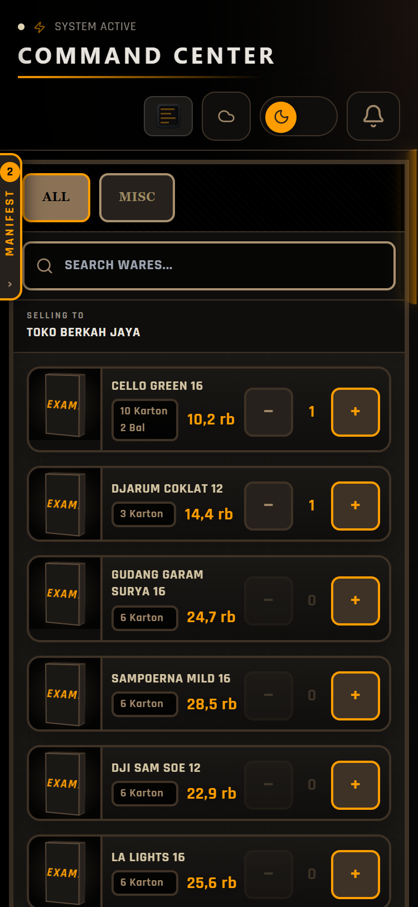
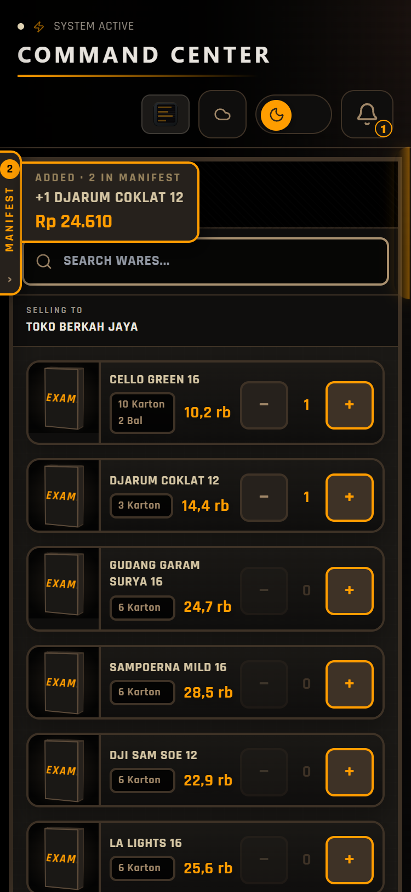
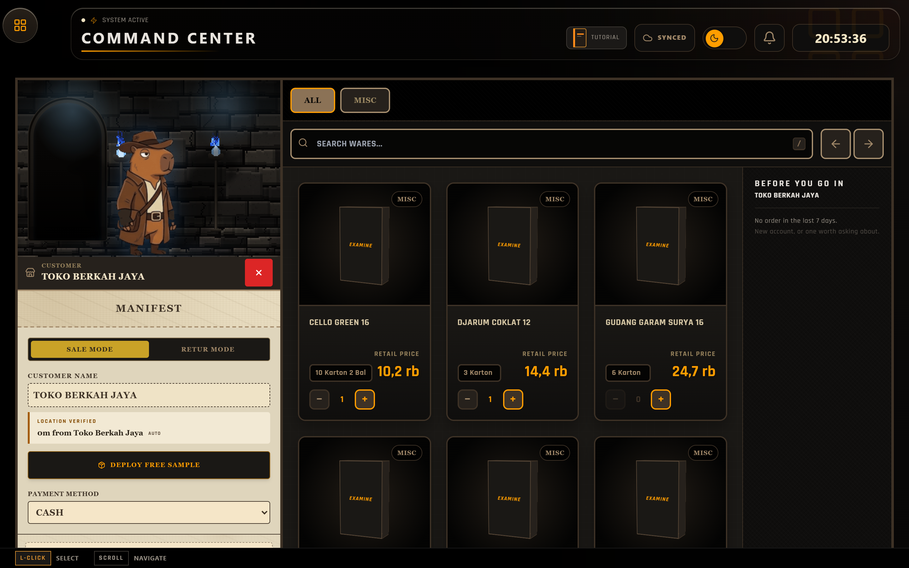

Grey frames are the app today. Gold frames are the new flow, drawn on the real terminal in the lab, phone 375 px. Your flow: reach a shop, the app asks what happened, a status that is not an order is saved with one tap, TAKE ORDER opens the full terminal, and the Manifest slides out from the left instead of up from the bottom.
Today the terminal picks the shop and then waits: to report "stock full" the salesman has to leave and use Journey. After: the question comes first. TAKE ORDER is the big button; Stock Full, Competitor Issue, Store Closed and Routine Check save in one tap and the visit is done. New Request asks for one line of text first, because the request is the text.




Everything that lives in the Manifest moves with it unchanged: customer, sale/retur, payment, the promo give box, the proof photo and SIGN. The tab you tapped stays stuck to the panel's edge, so the same tab opens it and closes it. Lite mode: same panel, it just appears without the slide.


Today the closed Manifest bar at the bottom always shows the total and the last ware added. With the bar gone, that job moves to a flag: after every +, a flag slides out of the tab with the ware and the new total for 2 seconds, then folds back in. The count stays on the tab.


On the PC the Manifest is already a fixed column on the left, so only the arrival question (step 1) is new there.

On an iPhone in Safari, a swipe that starts at the very left edge of the screen means "go back". So the tab opens with a tap; dragging it works too. When the app is installed on the home screen there is no such swipe.